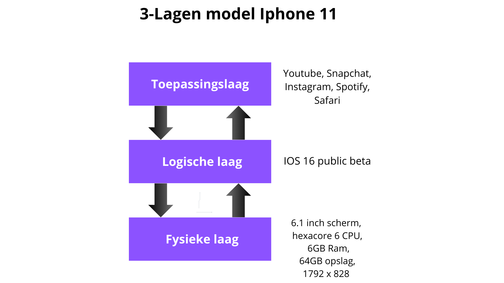

toepassingen-laag (application layer)
logische laag (logical layer), ook wel systeemsoftware
fysieke laag (physical layer): hardware
tekstverwerkers (Word, Google Doc, LaTeX)
spreadsheet-programma's
games
apps
browser
operating system (Windows, Linux, OS X, iOS, Android)
file systeem, resources, beveiliging, gebruikers, gebruikersinterface
programmeertalen, compilers, en libraries
database management systemen
netwerksoftware (lokaal netwerk, internet, web)
computer-hardware
netwerk-hardware
randapparaten (beeldscherm, toetsenbord, USB-stick, printer)
